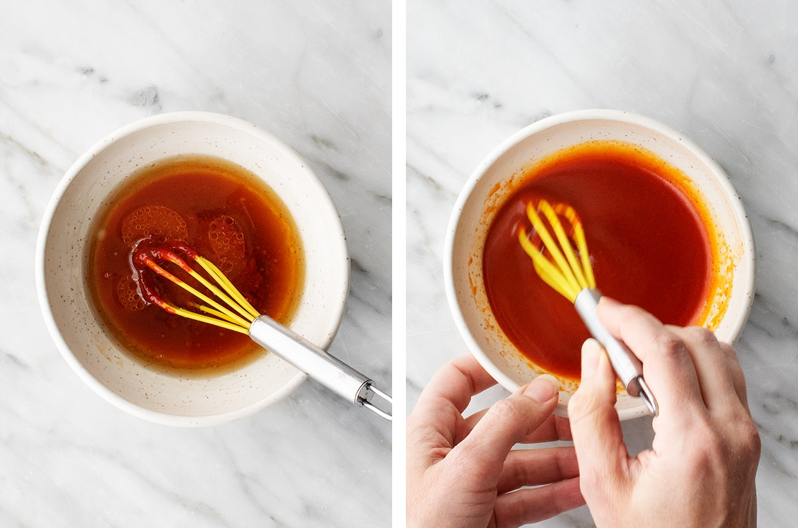

Topped with gochujang sauce and seasoned veggies, it's fresh, healthy, and packed with bold flavor.
Ingredients
½ English cucumber, thinly sliced
½ teaspoon rice vinegar
1¼ teaspoons sesame oil, divided
1 cup fresh mung bean sprouts
1 cup shredded carrots
4 cups baby spinach
½ teaspoon tamari
2 cups cooked short-grain white rice
2 fried eggs, or 1 cup cubed baked tofu
4 ounces sautéed shiitake mushrooms, optional
1 recipe Gochujang sauce
Sesame seeds
Sea salt
Kimchi, optional, for serving
Chopped scallions, optional, for serving
Instructions
In a small bowl, toss the cucumber slices with ½ teaspoon rice vinegar, ½ teaspoon sesame oil and a pinch of salt. Set aside.
Bring a small pot of water to a boil. Drop in the bean sprouts and cook for 1 minute. Drain and set aside.
Heat ½ teaspoon sesame oil in a medium skillet over medium heat. Add the carrots and a pinch of salt. Cook, stirring for 1 to 2 minutes until a little bit soft, and then remove from the pan and set aside. Heat ½ teaspoon more sesame oil in the skillet and add the spinach and tamari. Cook, tossing, for 30 seconds or until just wilted. Remove from the skillet and gently squeeze out any excess water from the spinach.
Assemble the bowls with the rice, cucumber slices, bean sprouts, carrots, and spinach. Top with a fried egg or baked tofu. Add the mushrooms, if using. Sprinkle with sesame seeds and drizzle generously with the gochujang sauce. Serve with kimchi and scallions, if desired, and the remaining gochujang sauce on the side.
Tip for the Gochujang Sauce

Gochujang paste – Find it at a Korean market or in the Asian section of your grocery store. Different brands vary in potency, so start with less and add more, to taste, depending on how spicy you like your sauce.
Sesame oil – It cuts the heat of the gochujang paste and gives the sauce a nutty complexity.
Rice vinegar – For tang!
Pure maple syrup – Many brands of store bought gochujang sauce contain corn syrup, but I like to sweeten mine naturally with pure maple syrup. It makes this sauce deliciously savory and sweet.